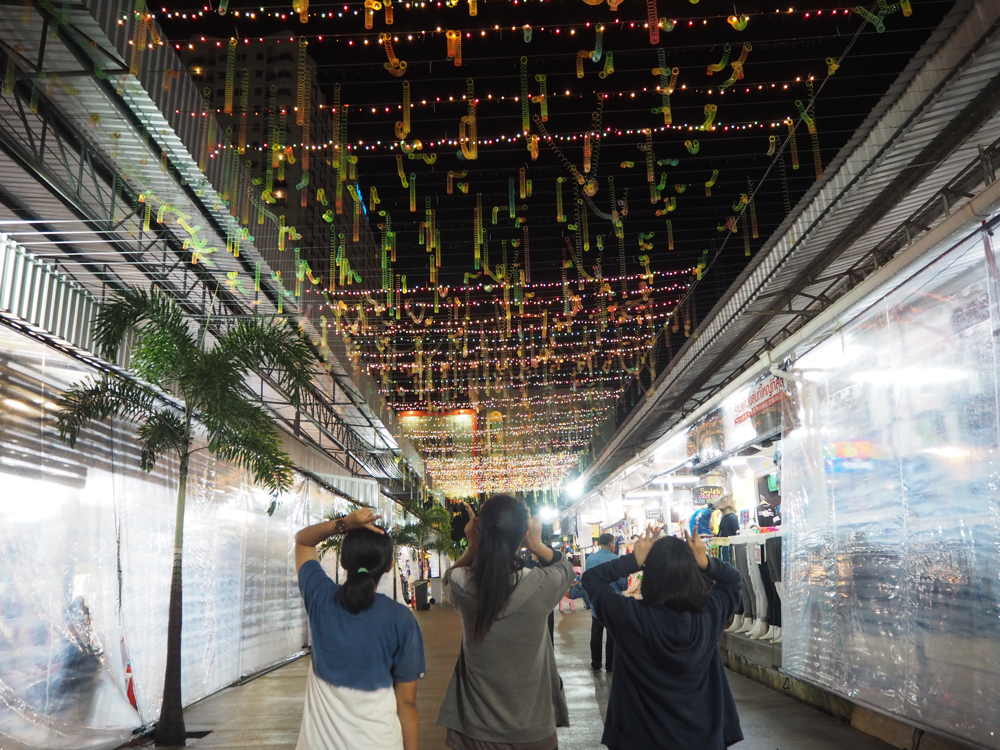
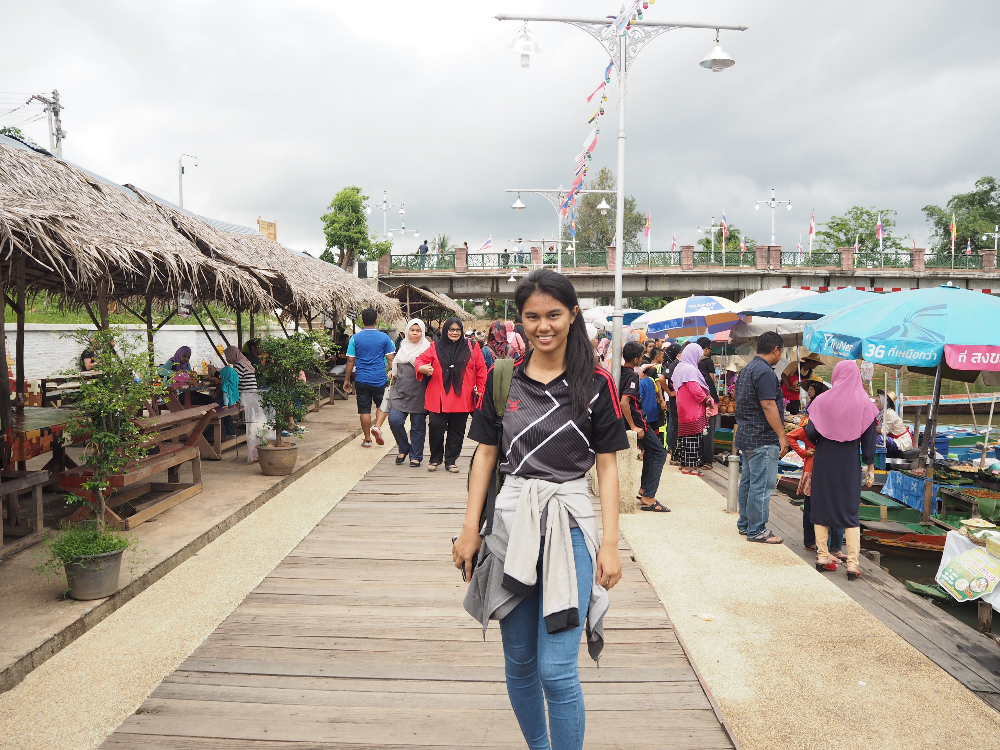
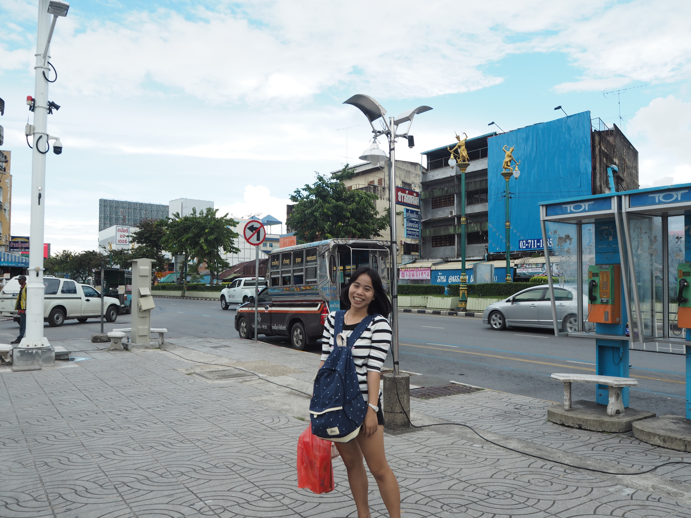

ABOUT US
Pai-ta-lad
ไป-ต๊ะ-หลาด หลาดในทีนี้มีความหมายว่า ตลาด เป็นคำภาษาใต้ที่มีความหมายที่อธิบายง่ายๆว่า "ไปตลาดกันเลยยย" ซึ่งพ้องเสียงกับคำว่าตลาดในภาษาไทย
เกิดขึ้นมาจากสมาชิกในกลุ่มมีสาวโคราชอยู่1คน และสมาชิกที่เหลือก็อยากพาสาวโคราชเที่ยวแบบชิคๆ วินเทจๆ เลยตกลงกันว่าไปตลาดกัน ศึกษา วิถีชีวิตหนุ่มสาวหาดใหญ่กันหน่อย

สาวโคราชหนึ่งเดียวในกลุ่มชื่อ"กล้วย"
นักเที่ยวไม่เน้นห้างเน้นธรรมชาติ
ขอลองมาสัมผัสวิถีชีวิตชาวหาดใหญ่
ผ่านตลาดในรูปแบบต่างๆ

สาวสงขลาโดยกำเนิดรู้จักหาดใหญ่ดี"แนน"
หาดใหญ่เปรียบเสมือนบ้านหลังที่สอง
ตลาดไหนมีของอะไรขึ้นชื่อไม่เคยพลาด

"แนน"เจ้าถิ่นเด็กหาดใหญ่
รู้จักทุกซอกมุมในหาดใหญ่อย่างดี
ตลาดไหนขึ้นชื่อ เปิดกี่โมง เดินทางอย่างไร
เจ้าถิ่นพร้อมพาไปเสมอ